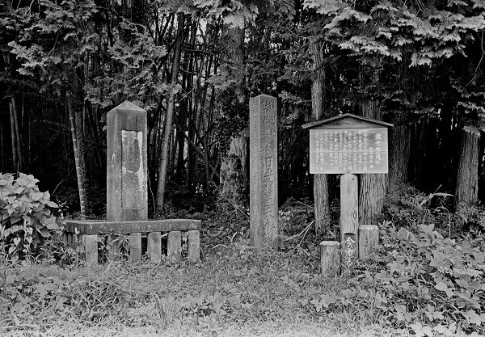

高崎市倉賀野の追分中山道）を出発して日光市今市の追分（日光道）まで約116Km 標高差あまりない。
埼玉県の自宅から電車を乗り継ぎ日帰り 計5日間で完歩する。ｽﾀｰﾄは日本橋にしました。
| 年月日 | 出発駅・時間 | 到着駅・時間 | 歩き距離・時間 | 写真ﾌﾞﾛｸﾞ |
|---|---|---|---|---|
| 2016/2/28 | 倉賀野駅_GPSﾛｶﾞｰ忘れる | 境町駅_GPSﾛｶﾞｰ忘れる | 約21Km：約5時間 | 2016/2 2016/2 2016/2 2016/2 2016/2 |
| 2016/3/3 | 境町駅_11:42 | 太田駅_15:11 | 約14.8Km：3時間29分 | 2016/3 2016/3 2016/3 |
| 2016/3/23 | 太田駅_12:04 | 福居駅_14:05 | 9.0Km：2時間00分 | 2016/3 2016/3 |
| 2016/6/6 | 福居駅_10:47 | 佐野駅_14:47 | 16.4Km：4時間00分 | 2016/6 2016/6 |
| 2016/6/15 | 佐野駅_8:08 | 栃木駅_13:21 | 21.9Km：5時間13分 | 2016/6 2016/6 2016/6 |
| 2016/6/24 | 栃木駅_8:03 | 楡木駅_13:09 | 21.1Km：5時間6分 | 2016/6 2016/6 2016/6 2016/6 2016/6 |
| 2016/6/29 | 楡木駅_8:11 | 文挾駅_12:12 | 17.1Km：4時間0分 | 2016/6 2016/6 |
| 2016/7/16 | 文挾駅_8:50 | 今市駅_11:49 | 12.1Km；2時間59分 | 2016/7 2016/7 2016/7 2016/7,完歩する,,, |
日光例幣使街道 杉並木
